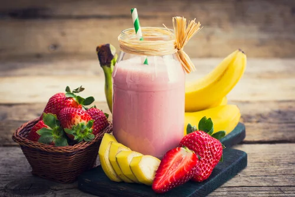

Licuados

Ingredientes
Frutilla
Banana
leche
Preparación
Pelar la fruta
Cortarla en trozos
Licuarlo junto con la leche
Servir con mucho hielo
hola
otros licuados
Final
inicio
Nosotros
Contactos
Copyrith@-Mi Primera Pagina